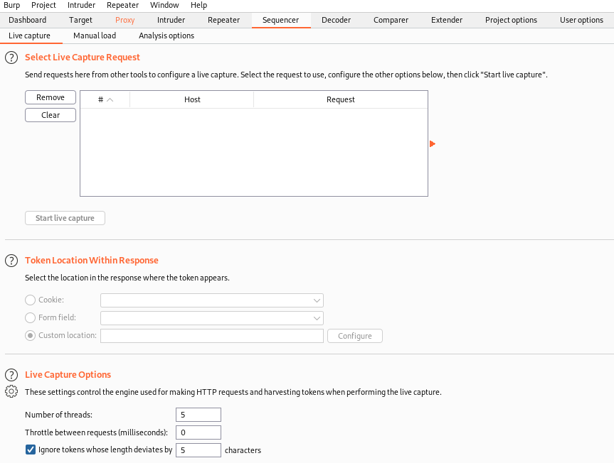

Sequencer
Sequencer
The primary use-case for Sequencer has long been to
perform session analysis to determine whether an application's session-generation algorithm might allow for predictable sessions, which could possibly allow an attacker to hijack sessions through knowing in advance a session token.
While Sequencer can be, and still is, used for session analysis, the likelihood of identifying predictable session generation has significantly diminished over the years. However, Sequencer can be used to assess CSRF tokens or any other element of an application that depends on being random
